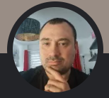

Credits
Emanuele De Negri
Jag heter Emanuele, är 36 år gammal och är italiensk men har bott i Sverige i 5 år.
Som yrke arbetar jag inom byggbranschen och är för närvarande ganska långt ifrån IT-arbetsmiljön. Men under en tid har jag bestämt mig för att omsätta min gamla passion i en karriär. Med detta i åtanke är jag medveten om vikten av att utbilda mig och ägna så mycket tid som möjligt åt att lära mig programmering och allt som hör till det. Inom kort kommer jag att fördubbla min tid för utbildning med förhoppningen att det snart kan bli mitt yrke. Jag tycker mycket om ämnet JavaScript och dess område, och jag vill lära mig att känna det i alla dess aspekter. I framtiden vill jag kunna tillämpa de tekniska kunskaper jag utvecklar på min mycket kommunikativa personliga läggning, och mitt slutliga mål kommer att vara att hitta ett yrke som passar mig perfekt.
Det här projektet är rent pedagogiskt och relaterat till kursen "Webbutveckling 2" som jag går. Jag skulle ha velat kunna ta hand om detaljerna och många delar av koden bättre, men tiden har varit en tyrann. Samtidigt är jag ganska nöjd med resultatet och med vad jag har lärt mig under kursens gång.
Mina nyckelord är UTBILDNING, PASSION OCH ÖDMJUKHET.